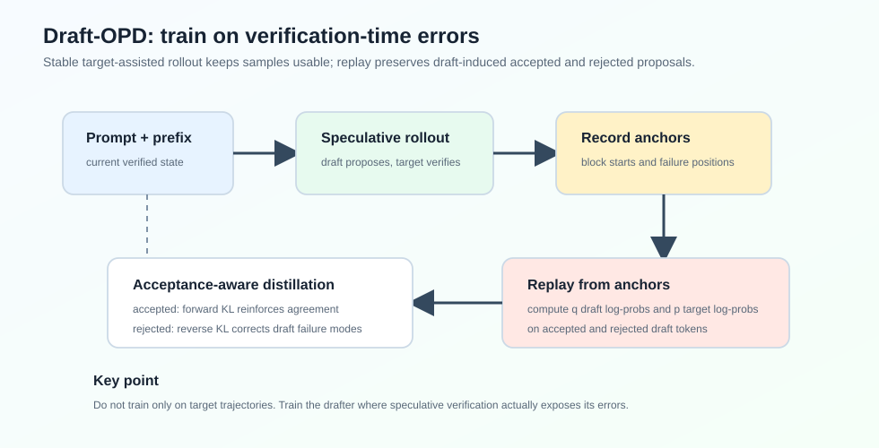
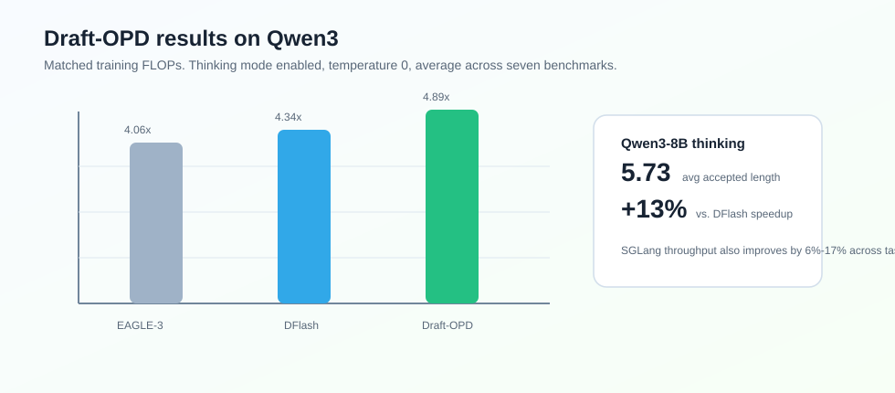

Draft-OPD
Abstract
论文 Draft-OPD: On-Policy Distillation for Speculative Draft Models 关注 speculative decoding 中 draft model 的训练问题。
EAGLE-3、DFlash 这类训练式 draft model 通常用 target model 生成的离线轨迹做 SFT。论文观察到：SFT 很快会遇到 accepted length plateau，继续训练也不提升。原因是训练和推理的状态分布不一致：SFT 看到的是 target-generated trajectories，而 speculative decoding 真正评估的是 drafter 自己提出的 token block。
Draft-OPD 的核心想法是：让 target model 在 drafter 自己暴露错误的位置上监督 drafter。它用 target-assisted rollout 保证样本稳定，同时记录 speculative verification 暴露出来的 anchor/error positions，再从这些位置 replay draft，计算 target 和 draft 的 log-prob，最后用 acceptance-aware distillation objective 训练。

论文在 Qwen3 系列上报告，Draft-OPD 在 thinking mode 下能达到超过 lossless acceleration，相比 EAGLE-3 和 DFlash 在 matched FLOPs 下分别提升约 23% 和 13%。
Motivation
Speculative decoding 的速度高度依赖 draft model 和 target model 的对齐程度。对齐越好，每轮 verification 能接受的 token 越多，average acceptance length 越高。
传统 SFT 训练 draft model 时，训练数据通常是 target model 生成的固定轨迹。也就是说，训练状态来自：
但在 speculative decoding 推理时，target model 验证的是 drafter 自己提出的 block。accepted length 实际由 draft-induced states 决定：
这就是论文所说的 offline-to-inference mismatch。
自然的想法是用 on-policy distillation，让 student 在自己访问到的状态上接受 teacher 监督。但直接套 OPD 到 draft model 上又有两个问题：
- draft-only rollout 不稳定：EAGLE/DFlash-style draft modules 不是完整 autoregressive generator，强行自回归 rollout 容易重复或退化；
- naive target-assisted rollout 会丢掉 on-policy signal：target model 会修正错误 token，最终轨迹又变成 target distribution。
Draft-OPD 要同时满足两个条件：rollout 质量稳定，并且保留 draft model 在 verification 中暴露出的错误。
Method
Rollout with Error-Position Collection
给定 prompt ，Draft-OPD 用正常 speculative decoding 做 rollout。每一轮中，draft model 在当前 verified prefix 后提出 个 token：
target model 并行验证这个 block。如果接受了 个 token，下一个 anchor 移到 。
关键是：Draft-OPD 不只保留最终 verified rollout，还记录每个 block 的起点 anchor 。这些 anchor 标记了 drafter 在推理时真实采取行动的位置。
Replay for Log-Probability Computation
收集完 rollout 和 anchors 后，Draft-OPD 从每个 anchor 重新 replay drafting。对于 anchor ，上下文是：
然后在 draft-generated prefix 上同时计算 draft 和 target 对每个 draft token 的 log-prob：
这一步和普通 SFT 的区别很大：它不是在 final rollout token 上训练，而是在 draft model 提出过的 tokens 上训练，包括被 verification 拒绝的位置。
Acceptance-Aware Distillation
verification 会把 draft tokens 分成 accepted 和 rejected 两类：
论文对两类 token 使用不同 KL 方向：
- accepted tokens：用 forward KL，强化 draft 与 target 已经比较接近的区域；
- rejected tokens：用 reverse KL，惩罚 draft 自己高置信但 target 不认可的模式。
对于 rejected tokens，论文还加了位置衰减：
因为 speculative decoding 中越靠前的错误越重要。一个 block 的第一个 token 错了，后面的 suffix 再好也不会被接受。
最终目标是：
实验中 。
Experiments
论文在 Qwen3-4B、Qwen3-8B、Qwen3-30B-A3B-Thinking 上实验，任务包括 GSM8K、MATH-500、AIME25、MBPP、HumanEval、SWE-bench Lite、MT-Bench。
在 Qwen3-8B、thinking mode enabled、temperature = 0 下：
| Method | Mean Speedup | Avg. Acceptance Length |
|---|---|---|
| EAGLE-3 | 5.64 | |
| DFlash | 5.19 | |
| Draft-OPD | 5.73 |

在 thinking mode disabled、temperature = 0 下，Qwen3-8B 的平均 speedup：
| Method | Mean Speedup | Avg. Acceptance Length |
|---|---|---|
| EAGLE-3 | 5.99 | |
| DFlash | 6.04 | |
| Draft-OPD | 6.57 |
这说明 Draft-OPD 不是只对长 reasoning traces 有效，在普通非 thinking generation 中也能继续提升 draft-target alignment。
Serving
论文也在 SGLang + FA3 backend 下验证了部署收益。Draft-OPD 相比 DFlash 在 Qwen3-4B、Qwen3-8B、Qwen3-30B-A3B-Thinking 的 AIME25、MATH-500、SWE-Lite 上普遍提升 throughput。
一个有意思的点是：高并发下收益没有消失。论文报告在 concurrency = 32 时，平均相对增益甚至高于 concurrency = 1。这说明 acceptance length 的提升能转化为实际 serving throughput，而不只是单机低并发 benchmark 数字。
Ablation
论文做了几个关键 ablation：
| Variant | MATH-500 | HumanEval | MT-Bench |
|---|---|---|---|
| Draft-OPD | / 6.57 | / 6.18 | / 4.44 |
| w/o weight decay | / 6.18 | / 6.01 | / 4.29 |
| all-reverse KL | / 6.14 | / 5.98 | / 4.33 |
| all-forward KL | / 6.35 | / 6.09 | / 4.33 |
| random anchors | / 6.08 | / 6.07 | / 4.24 |
这里能看到三点：
- mixed KL 比单一 KL 方向更好；
- rejected-token position decay 有用；
- error-position anchors 比 random anchors 更有效。
Takeaway
Draft-OPD 的核心价值不在于换了一个 draft architecture，而在于指出 draft model 后训练应该对准 speculative decoding 真正失败的位置。
可以把它和 DFlash/Domino 放在一条线上看：
- DFlash 降低 draft cost；
- Domino 在 parallel drafting 上补 causality；
- Draft-OPD 则从训练分布上补齐 draft-induced errors。
我觉得这篇最值得记住的一句话是：draft model 不应该只学习 target model 已经走过的正确轨迹，还应该学习自己在 verification 中为什么失败。
Limitation
论文也提到几个限制：
- thinking-mode OPD 训练时最大 response length 是 4096，而评估用 8192，长生成后段状态覆盖不足；
- 主要实验集中在 Qwen3 和 DFlash-style draft architecture；
- Draft-OPD 保持 lossless decoding，只提升效率，不提升 target model 的生成质量。
 wechat
wechat alipay
alipay